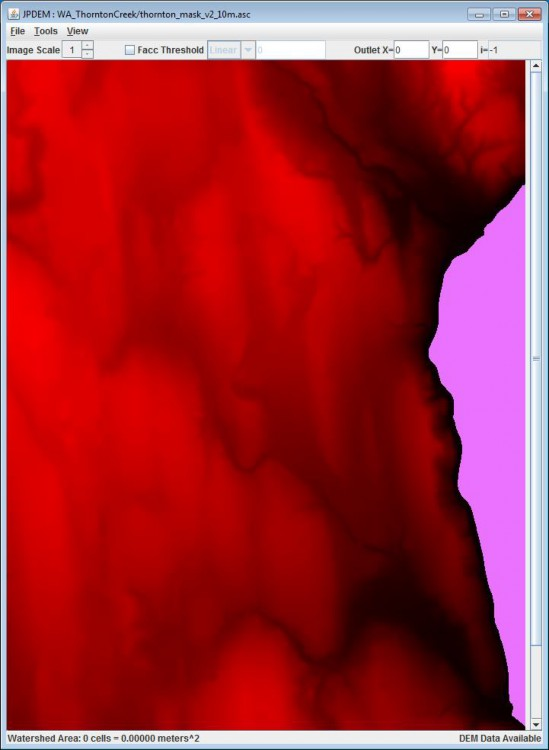
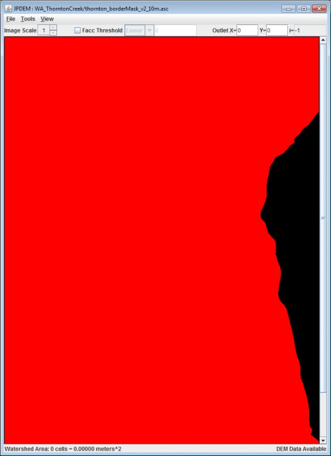
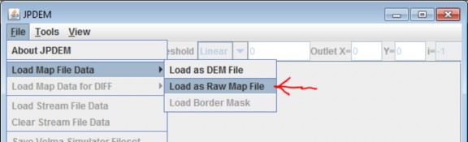
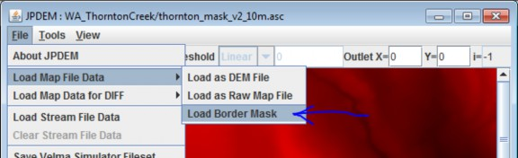
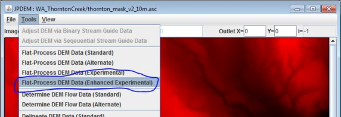
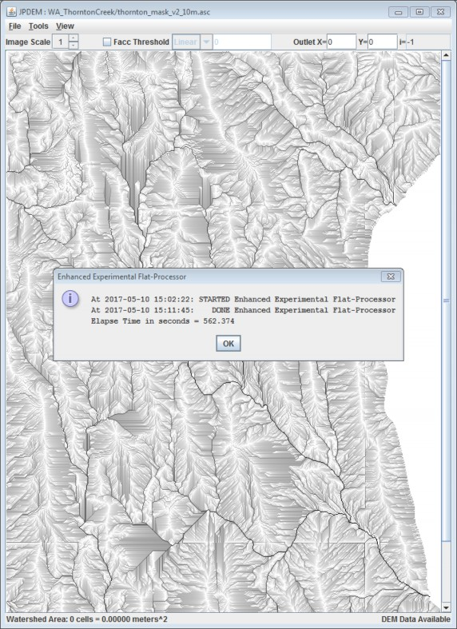
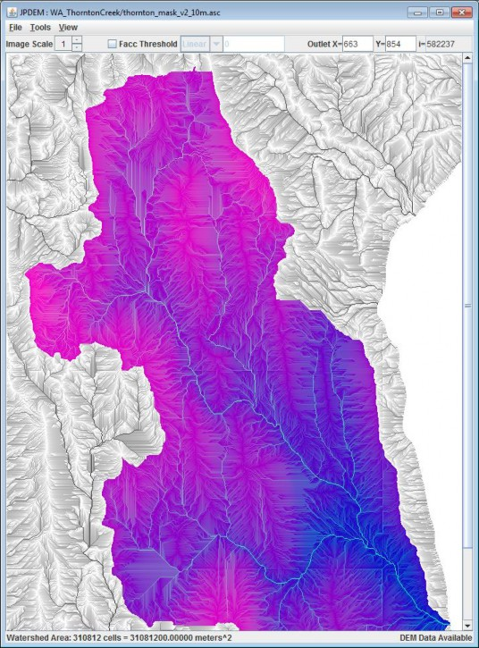

+
B.7 | JPDEM User-Specified Border Mask
Overview (Tutorial B.7 - JPDEM User-Specified Border Masks)
This JPDEM tutorial (B.7) builds on Tutorial B.6, "JPDEM User-Specified Map Borders", specifically to provide a more detailed example of how to create a DEM border mask that encompasses large waterbodies at the edge of the DEM. By including these flat features as part of the map border, JPDEM will ignore them during flat-processing of raw DEM maps, considerably speeding up the flat- processing process.
Example
This is an example of how to flat-process a large DEM grid in JPDEM in a reasonable amount of time, by
taking advantage of JDPEM's user-specifiable border-mask functionality.
We start with the original "raw" DEM ASCII grid (.asc) file we wish to flat process:
thornton_mask_v2_10m.asc
The header information for this file is:
| ncols | 681 |
| nrows | 990 |
| xllcorner | 548019.221 |
| yllcorner | 5281283.0124 |
| cellsize | 10 |
| NODATA_value | -9999 |
Initial efforts to flat-process this grid with JPDEM's Standard (STD) and Alternate (ALT) flat-processing algorithms failed.
The grid is large enough, and has enough "flat spots" that these algorithms reach hard-wired, "unable to complete" timeout limits before all flat areas have been processed.
Attempts to flat-process this grid with the Experimental (EXP) and Enhanced Experimental (EEX) algorithms likewise failed. Unlike the STD and ALT algorithms, EXP and EEX do not have mandatory timeout limits, but neither algorithm was able to complete the flat-processing task after running continuously for more than 35 days.
Here is a screen-capture of the raw DEM file, loaded into JPDEM, with cells that have value == 0.0
highlighted in "pepto-pink":
The highlighted, "all cells are zero" area on the right side of the raw DEM has a drastic impact on all the flat-processing algorithms, but because that area of uniform-value cells lies against an edge of the grid,
the EXP and EEX algorithms in particular spend an inordinate amount of their processing time ensuring flow through that area and to the grid edge.
We can tell JPDEM to ignore the problem "all cells are zero" area by providing it with a border mask map that marks all the zero value cells as part of "off-limits" border of the grid. JPDEM always requires a border for flat-processing, and only flat-processes cells that lie within the border ("interior cells").
Loading an .asc file into JPDEM "as DEM" automatically designates the top and bottom rows, and the left and right-most columns of cells as the border. However, when an .asc file is loaded into JPDEM "raw", no border is created, and the "Load Border Mask" menu item can subsequently be used to specify an arbitrary border that is applied to the raw-loaded DEM values.
A border mask .asc file's grid values must be either "0" (for border cells) or "1" for (interior cells). The values must also be integers (i.e. "0.0" or "1.0" is not allowed).
A border mask must always include the default border as border cells; i.e. the top and bottom rows and left-most and right-most columns must be marked as border cells.
GIS tools like ArcMap can be used to create border mask .asc files of arbitrary complexity and detail, but for the thornton_mask_v2_10m.asc file, we can take advantage of the fact that the border we wish to create is either a cell in the top or bottom row, left or right-most column OR has a cell value of "0.0".
We can encode this relatively simple set of rules into a small Awk script and run it in a Cygwin Bash command shell. A Python script would work as well, and we could run that under a DOS command prompt or Windows PowerShell console, but the Awk code is more succinct.
Note that the Awk script developed in this example is not a general-purpose script; it takes advantages of various specifics of the thornton_mask_v2_10m.asc file's contents.
Here is the Awk script in its entirety:
# TOP of MaskMaker.awk
BEGIN {
IGNORECASE = 1;
headRows = 6;
}
# get the number of data rows from the header information
/^nrows/ {
dataRows = $2;
}
NR <= headRows {
print;
}
# handle data rows, transforming and emitting them on-the-fly
NR > headRows {
if (NR == (headRows + 1) || (NR - headRows) == dataRows) {
for (i=1; i<=NF; ++i) {
printf("%s%s",(i==1?"":" "),"0");
}
printf("\n");
} else {
for (i=1; i<=NF; ++i) {
s = "0";
if (i > 1 && i < NF) s = $i == 0 ? "0" : "1";
printf("%s%s",(i==1?"":" "),s);
}
printf("\n");
}
}
# BOT of MaskMaker.awk
We can generate a border mask .asc file for the thornton_mask_v2_10m.asc file by running the following command line in a Cygwin Bash console:
$ awk -f MaskMaker.awk thornton_mask_v2_10m.asc > thornton_borderMask_v2_10m.asc
Depending upon the mode of the Cygwin Base console, we may also need to translate the newline characters of the resulting mask file to run under Windows:
$ unix2dos thornton_borderMask_v2_10m.ascunix2dos: converting file thornton_borderMask_v2_10m.asc to DOS format...
Here's the resulting thornton_borderMask_v2_10m.asc file, "as Raw Map File" into JPDEM. Red
(interior) cells have value 1, and black (border) cells have value 0:
Now that we have a raw DEM map, and a border mask to overlay onto it, it's simply a matter of…
Loading the DEM file "as Raw Map File" data . . .
Loading the border mask file as "Border Mask" data . . .
and finally, running a flat-processing algorithm on the combined DEM + custom border.
The STD and ALT flat-processors are not recommended for custom-border situations. Instead, the best bet is the EEX flat-processor (the EXP may work, but is not ideal) . . .
Here is the EEX flat-processed map, showing the completion message:
Here are the console messages from the sequence of steps: Load/raw, Load/border, EEX:
LoadPropertyFilesAction: file="D:\Users\kdjang\Velma_SiteData\WA_ThorntonCreek\thornton_mask_v2_10m.asc"
hasData=true ncol=681 nrow=990 xll=548019.221 yll=5281283.0124 isLlCenter=false cell=10.0 ndata=-9999.0 zmin=0.0 zmax=167.9841 delx=0 dely=0 minLogFacc=0.0 maxLogFacc=0.0
LoadDmMaskFileAction: file="D:\Users\kdjang\Velma_SiteData\WA_ThorntonCreek\thornton_borderMask_v2_10m.asc"
At 2017-05-10 15:02:22: Launching Enhanced Experimental Flat-Processor thread ... Experimental Flat-Processor: processed 622821 cells
Experimental Flat-Processor: largest set processed = 4234 Internal Data State Report
Map Summary: Total Cols=681 Total Rows=990 Total Cells=674190 NoData cells: Actual=0
Buffer Cells: Expected=3338 Actual=51369 Suspect=0 !!! WARNING !!! Interior Cells: Expected=670852 Actual=622821 Suspect=0 !!! WARNING !!! At 2017-05-10 15:02:22: STARTED Enhanced Experimental Flat-Processor At 2017-05-10 15:11:45: DONE Enhanced Experimental Flat-Processor Elapse Time in seconds = 562.374
Some observations:
